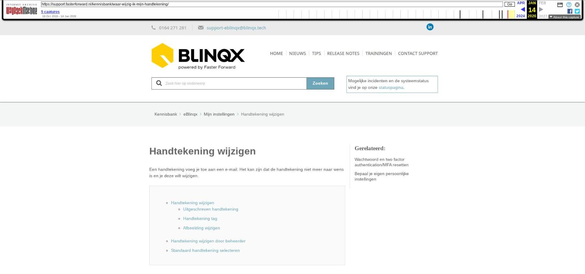

Handtekening wijzigen

Tekstinhoud
Handtekening wijzigen
Een handtekening voeg je toe aan een e-mail. Het kan zijn dat de handtekening niet meer naar wens is en je deze wilt wijzigen.
Handtekening wijzigen
Uitgeschreven handtekening
Handtekening tag
Afbeelding wijzigen
Handtekening wijzigen door beheerder
Standaard handtekening selecteren
Handtekening wijzigen
Voor het wijzigen van jouw handtekening in eBlinqx of een nieuwe toe te voegen ga je naar 'Mijn instellingen'.
'Mijn instellingen' vind je als snelkoppeling rechtsboven in het menu.
Uitgeschreven handtekening
Indien het een uitgeschreven handtekening is dan kan je deze zelf wijzigen. Klik op het wijzigingsicoon achter de handtekening wanneer je die wilt wijzigen. Wijzig de handtekening en klik op opslaan om de wijziging op te slaan.
Handtekening tag
Vaak wordt er gebruik gemaakt van een 'tag' bijvoorbeeld: [handtekening]. Deze tag heeft een vaste opmaak en haalt de persoonlijke gegevens op van de ingelogde persoon. Of de gegevens worden opgehaald van de organisatie waaraan de persoon en/of het klantdossier is gekoppeld.
Wijzigen de persoonlijke gegevens of kantoorgegevens en wil je deze ook aanpassen in jouw handtekening dan dien je de persoonlijke gegevens onder de persoon of het kantoor te wijzigen. Deze gegevens vind je terug onder jouw organisatie en onder de persoon. Voor het wijzigen ga je naar Beheer – Organisaties & Personen – zoek de desbetreffende persoon of organisatie op en pas hier de gegevens aan. Mogelijk heb je hier geen rechten voor. De interne beheerder kan dit dan voor je wijzigen.
Soms worden de gegevens in de handtekening tag niet opgehaald onder het kantoor en staan deze als vast gegeven in de tag. Dan dienen de gegevens aangepast te worden in de tag zelf. Het kan vrij lastig zijn om de juiste instellingen en gegevens te achterhalen. Mocht jouw handtekening tag gewijzigd moeten worden dan kan je een e-mail met de wijzigingen sturen naar support-eblinqx@blinqx.tech.
Afbeelding wijzigen
Het is mogelijk om afbeeldingen toe te voegen en/of te wijzigen in de e-mailhandtekening. De afbeeldingen moeten door middel van een URL toegevoegd worden. Om van een afbeelding een URL te maken, moet de afbeelding gehost worden. Dit kan jijzelf regelen of wij kunnen de afbeelding voor jouw hosten en omzetten naar een URL. Stuur hiervoor een e-mail naar support-eblinqx@blinqx.tech. De URL verwerk je in de handtekening via het afbeeldingsicoon. Bij het veld URL vul je de URL in.
In de de handtekening gevuld wordt door middel van een tag dan zal de afbeelding in de tag verwerkt moeten worden. Stuur hiervoor een e-mail naar support-eblinqx@blinqx.tech.
Handtekening wijzigen door beheerder
Het is ook mogelijk om als beheerder de handtekening van gebruikers te wijzigen. Hiervoor ga je naar Beheer – Organisatie & Personen. Hier zoek je de juiste gebruiker op. Dit kan via de organisatie waaraan de gebruiker is gekoppeld of door op de persoon te zoeken. De betreffende gebruiker open je en je gaat naar het tabblad Login- en systeeminstellingen. Hier kan je de handtekening wijzigen volgens bovenstaande uitleg.
Standaard handtekening selecteren
Je ziet achter in de regel bij de handtekening een bolletje. Daar selecteer je de handtekening die standaard wordt ingevoegd, bijvoorbeeld wanneer je een e-mail opstelt of een e-mail beantwoord. Indien je niet wilt dat er standaard een handtekening wordt toegevoegd dan vink je 'Geen standaard handtekening invoegen' aan.
Laatste update: 27 oktober 2025
Was deze informatie nuttig?
Ja Nee